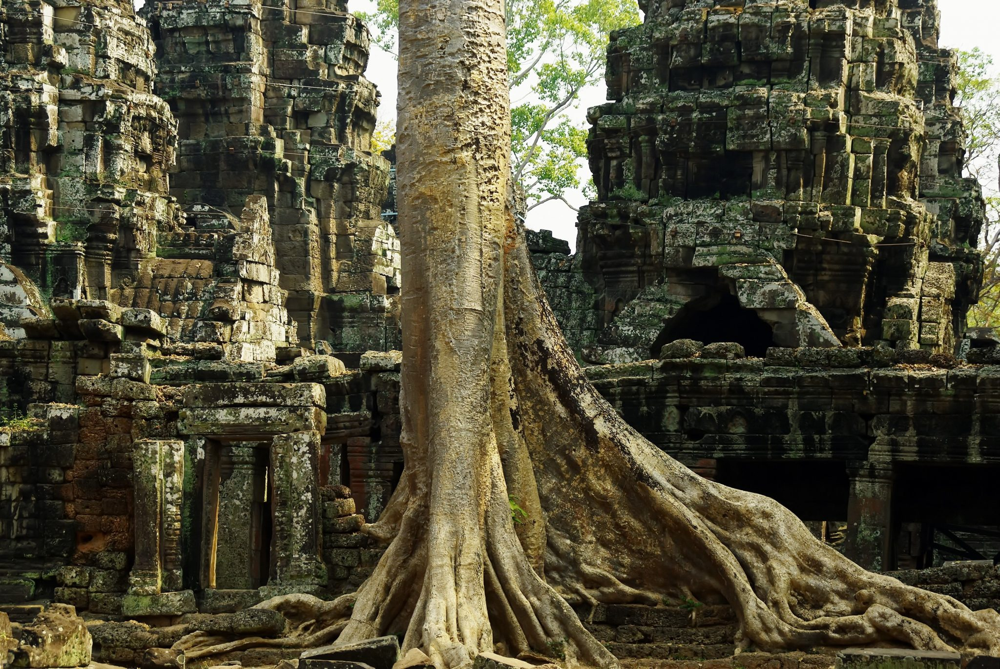
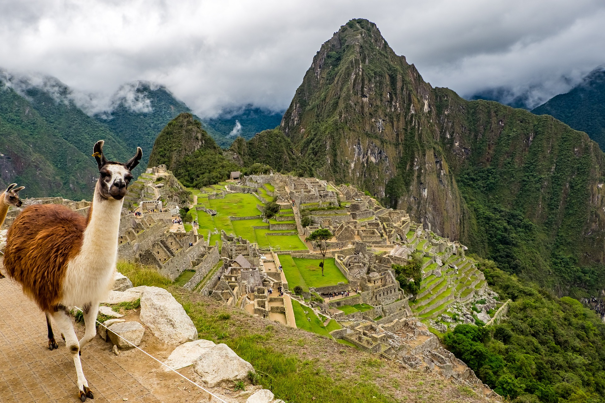

Foreign Language
The lost city of Angkor was never really lost, just an understanding of how vast it once was. It was the largest pre-industrial city in the world, with an urban sprawl of around 1000 square kilometers (390 sq mi) centered around a complex of over 1000 temples ranging in size from small piles of bricks to the massive and imposing Angkor Wat.
Angkor
This place’s name literally means “Lost City,” but it has had other names as well. The grave-robbing treasure hunters who found it in the 1970s called it “Green Hell” or “Wide Set,” and the locals (who naturally had known about it all along) called it Teyuna and believe it was the heart of a network of villages inhabited by their forebears.
La Ciudad Perdida
They call it the 8th wonder of the world. Perched on top of a near-inaccessible cliff in Sri Lanka, the ancient palace and fortress of Sigiriya is pretty cool. The ancient Indian epic poem describes a place called Alakamandava (the City of the Gods) that was built 5000 years ago . It actually describes a lot of places, but some believe that this particular place is a reference to the incredible castle of Sigiriya on its 200 metre (650 foot) tall boulder.